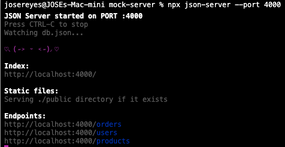
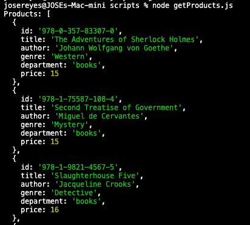

When people think about API testing, they usually jump straight to testing against a real backend environment. In reality, sometimes this isn't practical for a variety of reasons:
- The test data in the shared environment frequently changes.
- The backend is on a different timeline than the frontend work.
- Rate limits are becoming a problem.
- Reproducing error scenarios involves a complex series of steps.
As an SDET, we have to be flexible and find ways to work around these challenges.
In some cases, this means using a mock server, such as "json-server" to create a stable API layer for testing.
Json-server is a great alternative to spinning up a full backend service when the goal is focused on API testing.
It allows us to define custom endpoints and responses using simple JSON files, which can be especially useful for testing specific
scenarios or edge cases that may be difficult to reproduce in a shared environment.
Having a sandbox that we fully control allows us to focus on the real task at hand, writing solid api layer tests.
If structured properly, all that would be required to point the test repo to the real backend is updating the baseURL.
Setting up JSON Server
Setting up JSON Server is pretty straightforward. You can install it globally using npm:
npm install -g json-serverLet's assume we want to create an endpoint called "/products" that returns a list of books.
To do this, create a file in the root directory called "db.json" and add the following content:
{
"products": [
{
"id": "978-0-357-83307-0",
"title": "The Adventures of Sherlock Holmes",
"author": "Johann Wolfgang von Goethe",
"genre": "Western",
"department": "books",
"price": 15
},
{
"id": "978-1-75587-108-4",
"title": "Second Treatise of Government",
"author": "Miguel de Cervantes",
"genre": "Mystery",
"department": "books",
"price": 15
},
{
"id": "978-1-9821-4567-5",
"title": "Slaughterhouse Five",
"author": "Jacqueline Crooks",
"genre": "Detective",
"department": "books",
"price": 16
}
]
}
Make sure to save the file. Next we can start the server by running the following command in the terminal:
json-server --watch db.jsonThis will start the server and make your API available at "http://localhost:3000".
If port 3000 is already in use, you can specify a different port using the "--port" flag, like this:
json-server --watch db.json --port 4000
To retrieve the list of products defined in the "db.json" file, you can send a GET request to "http://localhost:4000/products".Using fetch to retrieve data from the products endpoint
Below is a simple javascript example using fetch to retrieve data from the products endpoint:
async function getProducts() {
try {
const response = await fetch('http://localhost:4000/products');
if (!response.ok) {
throw new Error(`HTTP error! Status: ${response.status}`);
}
const data = await response.json();
console.log('Products:', data);
} catch (error) {
console.error('Error fetching products:', error);
}
}
getProducts();
When you run this code, it will send a GET request to the "/products" endpoint of your JSON Server,
and you should see the list of products logged in the console.
